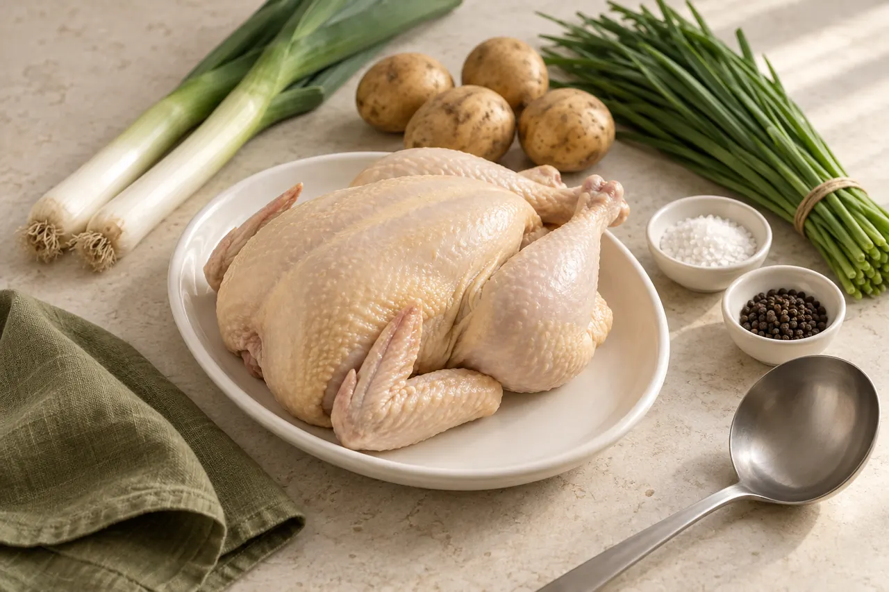

직접 우려낼 때일반적인 조리 순서
- 재료 준비·손질
- 오래 끓여 우려내기
- 거품·기름 걷어내기
- 간 맞추기
Korean Chicken Soup Base · 330g
육수 50g에 물 450g이면 2인분 한 냄비.
330g 한 병으로 6번, 12인분을 끓입니다.
표시·광고와 다르게 받으시면 교환·환불 — 정책 보기
끌어서 돌려 보세요 · 방향키 ← →
냉장고 속 재료
육수 우릴 시간이 없어 메뉴를 바꾼 저녁. 사 둔 재료는 그대로 남고, 오늘 저녁 국물 한 냄비만 사라집니다.
닭한마리육수는 그 빈자리를 채우는 국물 베이스입니다. 닭과 채소는 그대로 넣고, 국물을 우려내는 일만 병에 담았습니다.

국물 베이스만 비교했습니다
국물 베이스 완성
닭·감자·부추·대파를 넣고 끓이는 일은 어느 쪽이든 같습니다. 일반적인 조리 순서라 조리 환경에 따라 달라질 수 있어요. 달라지는 건 국물 베이스를 만드는 단계뿐입니다.
사기 전에 궁금한 것
육수를 고를 때 걸리기 쉬운 지점을 라벨 표기와 확인된 자료로 정리했어요.
육수 50g(약 종이컵 4분의 1)에 물 450g(종이컵 두 컵 반). 연하게는 물 500g, 진하게는 물 400g — 육수 양은 그대로 두고 물만 조절하세요.
연구원이 추천하는 베스트 비율가로·세로 6cm, 높이 18cm의 330g 한 병. 1회 50g씩 6번 쓰고 30g이 남습니다. 2인분씩 6번이니 12인분이에요.
330g = 50g × 6 + 30g닭·감자·부추·대파는 기호에 맞게 직접 넣어 끓이는 재료예요. 라벨 표기는 닭고기 2.7%, 닭고기추출물 0.1%, 닭고기지방 0.1%입니다.
재료는 별도국내산 닭으로 우려낸 깊고 깔끔한 맛입니다. 원재료에는 국산 닭가슴살과 농축 사골액, L-글루탐산나트륨(향미증진제)이 들어가요. 간이 이미 되어 있으니 소금은 마지막에 맛보고 정하세요.
전체 원재료는 아래 표시사항에소비기한은 제조일로부터 12개월(실온)이고 정확한 날짜는 용기에 표시합니다. 개봉 전에는 직사광선을 피해 서늘하게, 개봉 후에는 밀봉해 냉장 보관하고 빨리 사용하세요.
실온보관 1~35℃원료 특성상 층 분리와 침전물이 생길 수 있으나 품질에는 이상이 없습니다. 사용 전 충분히 흔들어 주세요.
사용 전 충분히 흔들기사용법
원료 특성상 층 분리와 침전물이 생길 수 있으나 품질에는 이상이 없습니다. 병을 위아래로 충분히 흔들어 고르게 섞어 주세요.
2인분 기준입니다. 육수 50g은 약 종이컵 4분의 1, 물 450g은 종이컵 두 컵 반이에요(종이컵 180ml 기준). 사용량은 기호에 따라 조절하세요.
내 인원에 맞춰 계산하기 →기호에 맞게 재료를 넣어 끓이면 닭한마리 한 냄비, 두 사람 국물이 됩니다. 죽은 졸이면서 진해지니 물을 더해 조절하세요.
계산해 보기
2인분 기준(육수 50g + 물 450g)의 비율을 그대로 늘리고 줄인 계산값입니다. 진하기는 육수 양은 그대로 두고 물만 바꿉니다.
기본 2인분: 육수 50g(약 종이컵 4분의 1) + 물 450g(종이컵 두 컵 반) · 종이컵 180ml 기준
인원별 g은 2인분 기준 비율을 곱한 계산값이며, 사용량은 기호에 따라 조절하세요. 저울로 재면 가장 정확합니다.
표시사항
닭 함량부터 원재료, 알레르기까지 구매 전에 확인하세요.
아래 인증·보험은 제조원 ㈜에프앤에스식품 기준입니다.
식품의약품안전처 · 인증번호 제2021-3-0546호
유효기간 ~ 2027.05.06
메리츠화재 · 1사고당 5억원 (총 5억원)
보험기간 ~ 2027.06.23
| 제품명 | 소스101 닭한마리육수 |
|---|---|
| 식품유형 | 소스(살균제품) |
| 내용량 | 330g (85kcal) |
| 원재료명 | 정제수, 소스A[물엿, 리치크리머{식물성크림분말R(야자경화유:외국산)}, 포장육{닭가슴살(국산)}, 농축사골액UHF, 정제소금], 정제소금[중국산/소금, 페로시안화칼륨], 소스B(말레이시아산), 소스C, 설탕, 소스D, 복합조미식품(미국산), L-글루탐산나트륨(향미증진제), 향미증진제, 기타농산가공품, 기타가공품, 과채가공품, 흑후추분말, 파라옥시안식향산에틸(보존료) |
| 알레르기 유발물질 | 대두, 밀, 우유, 닭고기, 쇠고기 함유 같은 제조시설에서 알류, 메밀, 땅콩, 게, 새우, 고등어, 돼지고기, 복숭아, 토마토, 아황산류, 호두, 오징어, 조개류(굴, 전복, 홍합 포함), 잣을 사용한 제품을 함께 제조합니다. |
| 영양정보 | 총 내용량 330g · 100g당 25kcal 나트륨 2,307mg(115%) · 탄수화물 4g(1%) · 당류 0g(0%) · 지방 0.5g(1%) · 트랜스지방 0g · 포화지방 0g(0%) · 콜레스테롤 0mg(0%) · 단백질 1.0g(2%) 1일 영양성분기준치에 대한 비율(%)은 2,000kcal 기준이므로 개인의 필요열량에 따라 다를 수 있습니다. |
| 보관방법 | 실온보관(1℃~35℃) · 직사광선을 피하고 서늘한 곳에 보관 · 개봉 후 밀봉하여 냉장보관하시고, 빨리 사용하시기 바랍니다. |
| 소비기한 | 제조일로부터 12개월(실온) · 정확한 날짜는 용기에 별도 표시 |
| 포장재질(내면) | 용기-PET, 뚜껑-PE |
| 품목제조보고번호 | 202103521782235 |
| 제조원 | ㈜에프앤에스식품 / 경기도 오산시 밀머리로 77 |
| 유통전문판매원 | 플레이버코드 / 경기도 화성시 동탄구 동탄대로5길 15, 더샵 동탄센텀폴리스1단지 102동 31층 3103호 (송동) |
| 소비자상담실 | 0507-1343-3918 |
| 반품 및 교환 | 제조원 및 판매원 · 본 제품은 공정거래위원회 고시 소비자분쟁해결기준에 의거 교환 또는 보상 받으실 수 있습니다. |
| 주의 | 부정·불량식품 신고는 국번 없이 1399 |
구매 후기
아래 후기는 실제 구매 후기가 들어왔을 때의 모습을 보여 드리는 예시입니다. 실제 구매 후기가 아닙니다.
실제 구매 후기가 등록되면 이 자리에 그대로 표시됩니다. 후기는 구매하신 분이 작성한 내용만 실립니다.
자주 묻는 질문
1회 50g 기준으로 6번 쓰고 30g이 남습니다. 2인분씩 6번이니 12인분입니다.
2인분 기준 육수 50g + 물 450g이 연구원이 추천하는 비율입니다. 기호에 따라 물 500g(연하게)에서 400g(진하게) 사이로 조절하세요.
병 안에는 육수가 들어 있습니다. 닭·감자·부추·대파 등은 기호에 맞게 직접 넣어 끓이세요. 라벨 표기는 닭고기 2.7%, 닭고기추출물 0.1%, 닭고기지방 0.1%입니다.
제품에 이미 간이 되어 있습니다. 끓인 뒤 마지막에 맛을 보고 필요하면 아주 조금만 더하세요.
원료 특성상 층 분리와 침전물이 생길 수 있으나 품질에는 이상이 없습니다. 사용 전 충분히 흔들어 주세요.
밀봉하여 냉장보관하시고, 빨리 사용하시기 바랍니다. 개봉 전에는 직사광선을 피해 서늘한 곳에 실온(1℃~35℃)으로 보관하세요.
대두, 밀, 우유, 닭고기, 쇠고기를 함유합니다. 같은 제조시설에서 알류, 메밀, 땅콩, 게, 새우, 고등어, 돼지고기, 복숭아, 토마토, 아황산류, 호두, 오징어, 조개류, 잣을 사용한 제품을 함께 제조합니다.